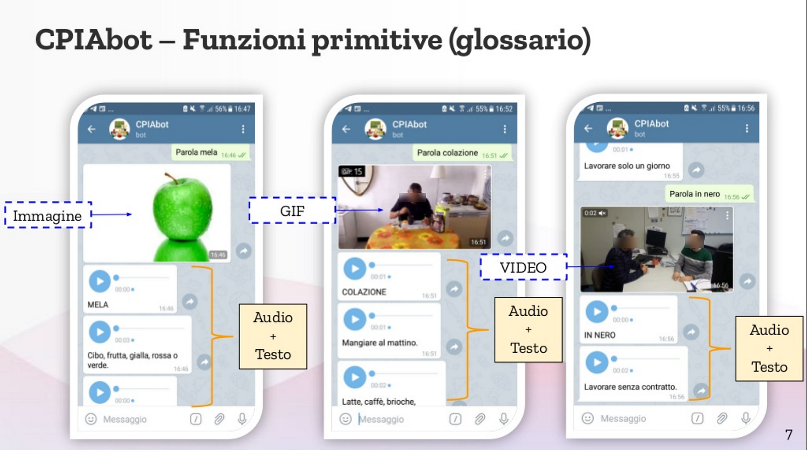

Are Alexa and Google Assistant both unfit as language learning assistant, inside/outside the…
Some reasons why I’m developing a Telegram chatbot, giving up on Alexa or Google Assistant application development.
This article is a remake of my original answer to Julie Daniel Davis article Google Assistant versus Amazon Alexa: Which Could be Queen of the Classroom?
I mitigated the original title “Are Alexa and Google Assistant both looser in edutech space?”, too extreme and generic, I admit.
The reviewed article is above all a way of reflecting about my experience with CPIAbot, a chatbot I’m developing to assist no-native italian language L2/PreA1 (almost illiterate) students of some Italian public schools, as part of a ITD-CNR research project.
More broadly, my thoughts are about some limits of today Amazon and Google voice assistant and smartspeakers technology.
Almost one year ago I started to develop CPIAbot, a language-first, voice-first multimodal chatbot, running on Telegram, to assist foreigners, students of CPIA, Italian public adult schools courses, to learn Italian language basics.

Let me tell the story. In fall 2018, our initial research goal, at ITD-CNR, was to realize a smartspeaker application (on Alexa or on GoogleAssistant) but we faced many issues. I detailed a long list of points in an academic paper I’ve just submitted (soon available), entitled “Un assistente conversazionale a supporto dell’apprendimento dell’italiano L2 per migranti: CPIAbot” (more details at the end of this article).
Long story, short, about using smartspeakers in our ongoing experiment:
From the linguistics/educational perspective, a voiceonly application is too demanding in term of learner’s cognitive effort, especially in the case of no native/illiterate learner (QCER level L2/Pre A1) .
Unique User identification
There are also many related tech issues, but for me, in educational realms (in classroom or outside the classroom),
the big issue that both systems have is the lack of a real Unique User Identification.
That means a way to identify uniquely the user (any student, any teacher) of the (conversational/voice) application. Having an user ID requirement is for me essential for any chat or voice application made with the goal of follow the student learning.
The related big point is related to the impossibility to process voice recordings of students. In short:
an Alexa Skill or a Google Assistant Conversational Action can not access user voices. Full stop.
Here below I deepen the voice/text flow that happens when a user interact with a third party app on Alexa or Google Assistant (through a smartspeaker).
Personal Voice Identification
Voice signature identification is just a subtopic of users (students) identification need. Probably we could renounce to identify a student by his/her voice, but at the end of the day we need to identify the student (especially for personalized exercises, part of our application/research goal). If we want to track and improve the specific student learning progress, we need to identify him/her.
So far, both Alexa and Google Assistant do not provide a convincing/final solution to identify speaking user in front of a smartspeaker (a far-field device).
Both big players allow to identify a small set of voiceprints (Google call these voice matches, whereas Amazon call these voice profiles). Google Assitant recognize a max of six different voices, whereas is not clear if there is a limit of recognized voices in Amazon Alexa. The good news is that both systems pass info to third party skills. See here and here.
But the proposed solutions are unpractical or even impossible in classroom scenarios, where there could be a lot of students in front to a single smartspeaker. All in all, the present voice recognition is not a suitable solution to identify a student.
Users Speech (voice recordings)
Voice recognition a part, there are other basic limits about voice recordings in general. The biggest issue involves privacy topics, but let take a part that thin ice for now; just let’s talk about some flat technical points:
both Alexa and Google Assistant “by design” do not forward the users (students in our case) voice recordings to third party skills/actions.
Generally speaking, this is quite understandable because big players do not want any possible malicious use of people voices by third party applications. But this inhibit a lot of smart elaborations the application could do with voice analysis. I already point out the need to use voice print recognition to identify speakers, and…
without the student audio/voice recordings, the application can’t do correct pronunciation analysis, sentence intonation recognition, emotional detection (“sentiment analysis”), etc. etc.
On Alexa, user utterances are not forwarded to the third party skills
In case of Alexa, user utterances (transcripted from voice to text) are not forwarded to third party skills, “as is”. In facts it happens that:
An Alexa skill do not even receive the full sentence (as voice-to-text transcript) of the user speech!
Instead, the skill gets just a label (an intent, in “conversational AI” jargon) that the developer has initially planned (during the “Alexa Skill nteraction model” design phase) that matches with the current user sentence. Strange, but this is the way!
Why Alexa do this “censorship”?
As far as I know, it has never been officially explained by Amazon, but I do believe it was a deliberate strategic decision. My suggestion is that the Alexa “interaction model” mitigates possible malicious uses/abuses by third party skills, giving Amazon an automatable way to control 3rd Party apps, avoiding privacy issues, etc. That’s a possible “customer first” right dogma.
On the other hand, the intent-based interaction inhibit third party skills to elaborate the user full utterance, limiting the NLU (natural language understanding).
Google Assistant, with Actions SDK, gives developers more freedom allowing them to use a classic intent-based classifier (the Dialogflow platform) as Alexa does, but Google also gives the option to use an alternative “low level” pass-trough (Actions SDK API), where the user utterances are passed to application, without any filtering. Thanks Google for that!
Why this “pass-through” is so important for an e-learning app or any (language) assistant bot?
Having the complete student text and voice input is paramount to analyse utterances on a human-machine conversation, e.g. a linguistic exercise.
Let’s imagine a simple conversation where an assistant chatbot asks the student to describe a scene displayed on a image or a video. In the example below, the CPIAbot exercise “guess the word” asks the student to guess the word (part of a glossary) describing the people that work in the scene.
Regarding the specific image, the students could answer: sales girls, women, cashiers, shop girls, clerks and many other definitions, that would be interesting to catch and analyze by the bot. This is feasible but pretty hard to implement with the Alexa interaction model.
Devices costs
The other point the original article mentioned are smartspeakers devices end-user costs. The author is absolutely right when she says that an Amazon Alexa Dot is cheaper than a Google Nest Home. The same is for Echobuds (Amazon offers the cheapest earables devices in the market). BTW, earbuds (personal, near-field earbuds) solve the user identification problem previous mentioned.
In a language learning context (and in any discipline), we want students use the (voice bot) application also outside the classroom, and
the “cheapest” and “easiest to own” device for people, especially refugees is a smartphone.
So back to our comparison, again both Google Assistant And Alexa lose in facts, because it’s true that both assistants are available as mobile app, but there are limits on voice/text interactions, by example in case of Amazon Assistant the students can’t text to Alexa. Google Assistant is a bit better, allowing users to write (or speak), but (if I well remember) there is no the way, action application side, to distinguish if user has wrote or has spoken (I could be wrong, I have to double check).
Minor notes about the devices audio quality
Amazon Echo has a jack audio output and Google Nest has not. That’s true. But both the devices could be coupled via bluetooth. Problem solved.
For me, as an “audiophile”, in terms of audio quality, comparing my Google Home Mini with an Amazon Echo Dot (v3), I much prefer the Google’s device because the more natural sound, or vice-versa, I literally dislike the over-compressed audio quality of Amazon Echo devices. Well, that’s subjective and on the other hand, in a classroom, the Echo’s bigger audio is a plus, I admit.
Authoring tools for teachers
Alexa Skills Blueprint? Maybe they are a nice tool for an initial engagement and gaming, but you can’t develop interesting/serious educational applications with them.
The most important point for me, is that both Google and Amazon do not provide so far a real simple convincing tools for non-developer and application developers in education realms, as teachers.
The visual design (GUI) vs language-based (CUI) tools is an old fashioned but highly discussed debate among conversational designers/developers. My side, regarding skill/actions development, and more in general about conversational application design and development, I’m supporter, since few years ago, of not-visual, but high-level authoring tools (possibly using very simple, declarative, ~natural language) programming languages. So far, I do believe that
both Amazon and Google do not provide authoring tools that allow teachers, contents creators and any no-developer, to easily create serious/complex custom applications.
Maybe Amazon is in the right direction with the www.litexa.com approach (I’ll deepen that topic on a future article). On the other hand, I have to say, as developer, that Google Actions programming paradigm is better than the Amazon skills programming proposal. There are many reasons, a bit tech/off topic here, that I often pointed out with my tweets.
Concluding, I confess I’m not too happy about how the two biggest players now support application development (in educational realms). We need much more! :-)
CPIAbot academic papers:
1. F. Ravicchio, G. Robino, G. Trentin.
CPIAbot: un chatbot nell’insegnamento dell’Italiano L2 per stranieri. 2019.
Published in Didamatica 2019 acts, Best Paper Award in section: BYOD. Mobile e Mixed Learning (ISBN 978–88–98091–50–8 https://www.aicanet.it/didamatica2019/atti-2019 p. 77–86).
2. F. Ravicchio, G. Robino, S. Torsani, G. Trentin.
Un assistente conversazionale a supporto dell’apprendimento dell’italiano L2 per migranti: CPIAbot. Nov 2019.
Submitted to the Italian Journal of Educational Technology (IJET).
Related article: Stateful Alexa Skills?